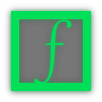

Frameworkless 
A simple, flexible framework for developing medium-complexity web application front-ends.


Start from a Boilerplate
Get started right away, so you can disassemble and play around at your lesure.
# Clone frameworkless
git clone git@github.com:synacorinc/frameworkless.git
# Install development dependencies
npm install
# Build the framework
npm run-script build # or just `grunt` if you have grunt-cli installed globally
# Run a local web server
PORT=8080 npm start # this just does `node server.js`Quick Repo Tour
/srcis where the source code lives/distis for build output. This is committed alongside source code so it is available via bower./demois a simple example app, built using requirejs and ford.js
Modules
Frameworkless is made up of three main modules:
events
(module/class/mixin) - Provides event firing and listening.
router
(module/class) - Instantiable declarative URL router.
util
(namespace) - Utility functions and essential ES5 polyfills.
These modules provide the necessary tools for most of the logic one might be required to implement on the client. You can load them using require or anoyther AMD-compatible loader.
Credit to Riot.js for sharing their ideology. Riot is a great framework, it's just a different take on the most useful conventions for simple frontend development.*
DOM Make Me Think
One very common feature is notably absent: there is no DOM abstraction. Taking yet another page from Riot.js, DOM manipulation is left up to you, or to your library of choice.
In the demo, a tiny DOM library called ford.js is being used. You are free to use whichever library you are most comfortable with - or no library at all.
Perhaps you may find the need for complete abstraction of the DOM slowly fades away.
License
BSD